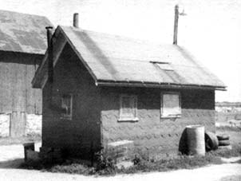
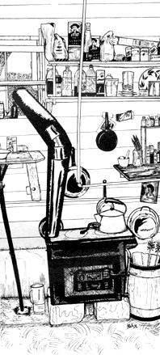

When we took that big step and joined a 130-acre working farm near Milwaukee last fall, we found the eighty-year-old farm house already jammed with humans. It was up to us to come up with our own snug winter lodging.
There are a dozen outbuildings on our land (the oldest barn dates back to 1894) and, typical of most turn-of-the-century midwestern farm constructions, they are structurally well conceived and geographically well placed. Everything (excluding the machine shed, which has fallen twice to tornadoes) was built right, in the right place . . . and the very soundest of all is an old pump house sitting on a stone foundation.
Built atop the well, a pump house is a kind of homestead nucleus from which water is directed to other farm locations. Sixty years ago, when dairy cows were added to our farm, this particular pump house had been expanded to its present size (15 X 18) and large concrete milk-chilling vats had been set into the floor. When we arrived, we found that the "milk house" had again been modified into a tool shed and home for rabbits.
Well, we'd found the place and we were glad that the old pump house-standing between us and the winter-could continue to meet the needs of the farm. It felt good to know that we weren't the first animals to profit by the building's creation.
The pump house was set with good foundation, adequate roofing and ventilation. A vestibule entrance (with one door hinged on one side and the second door hinged on the other) gave us in-and-out protection from creeping snowdrifts and insistent winds. Our new home would require only minimal insulation and repairs.
We cupped the windows with putty and covered them-glass, frames and all-with plastic to keep out the winter winds. Next we faced the walls around the bed with corrugated car cardboard (a cheap and readily-available insulation) and we kept the concrete floor's dampness from reaching us laying down plywood and old carpeting This "new" flooring has worked so well, by the way, that we've resolved to mantle the walls with pelts.
As might be expected, our small "cabin" has taught us to slim down our possessions and simplify our I living It has also given us a heaprespect for its warmest and colds spots. Our bed is near-but not too near-the wood stove (remember, heat rises and the warmest bed is the one nearest the ceiling) and we store our perishables in the cool, recessed milk vats under the table. Frozen foods just stay out in the snow in the winter and all other edibles go up on shelves, out of the way and the reach of any possible rats or mice.
Our lavatory needs are solved just as simply. The low side of the room is equipped with a ground drain (as are the central rooms of most such outbuildings) and our washbasin is a large funnel, corked and connected to the drain with a rubber hose. We were forced to plug the floor drain when the water rose during last spring's thaw, but that was only temporary.
With the well below us, water acquisition is no problem but, if it had been, we would have put a container with spigot above the wash basin. Of course, a nearby back house is indispensible as is a chamber pot in winter.
For winter warmth, we've found, a sure combination is body heat and a mighty wood supply (beaucoup hardwood scraps are available free for the hauling from most lumberyards).
Through experience, we now know that a wood stove needs a long chimney to insure a good draft. Ours was a little too short at first and, until we discovered the damper, we were plagued by snowstorm downdrafts. We finally solved the problem completely by jerry-rigging a long furnace pipe (usually found lying around wherever junk collects) out the nearest window and up the side of the building. We were careful to keep the pipe away from all wood and, since a stove pipe can become red hot and ignite or melt seemingly-safe materials at the height of its performance, we wrapped aluminum foil (asbestos works too) around the dangerous parts.
Our pump house also just happens to be the electrical center for much of the farm and we had the initial option of installing electrical space heaters in the building . . . but we chose wood heat instead and we've never regretted it. The flaming embers of a wood stove are far superior to any "clean" electrical heaters we've seen and watching our stove's flickering shadows in the late evening satisfies any desire we may once have had for television.
Our new home isn't fancy but, in it, we spend cozy winters with no heating bills and many an insight into the value of simple living . . . and, come summer, we expose the concrete floor, screen the windows and enjoy the cool natural air conditioning built into our renovated milk house!
|
 |
 |
|